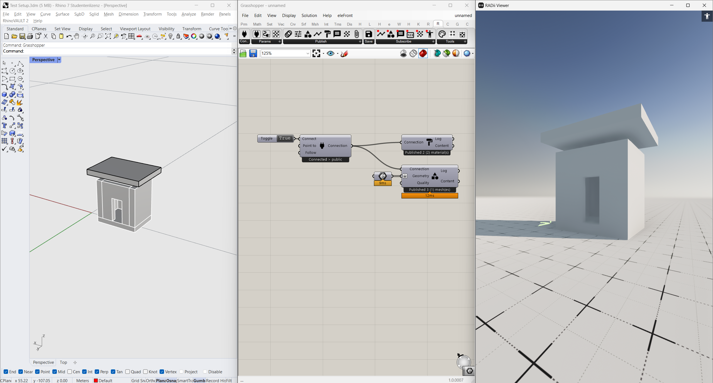

Radii Documentation¶
v39.1
Welcome to the RADii documentation.
RADii is a cloud platform that allows you to publish 3D Models for sharing, exploration and collaboration. RADii consists of two parts:
A Software Plugin for Rhino / Grasshopper to publish 3D Models
A bunch of Viewers for various devices (Win/Mac PCs, VR Headsets or mobile devices) to receive and explore the models.
Rhino, Grasshopper and Viewer¶
Example Project¶
Immersive Design Studio at Gramazio Kohler Research, ETH Zürich, Autumn semester 2023 student project by Matteo Cadei & Kyan Tami
How RADii works¶

How it works simplified: A CAD software (Rhino / Grasshopper) is connected to a cloud through a plugin. 3D Models are live uploaded to the cloud and then distributed to the RADii Viewers. The RADii Viewers are a program that can be run on Win/Mac, iPhone and VR Headsets. Viewers are connected through the cloud and can interact with each other.
Further Links¶
Videos about the current development and news are available on Archtica Youtube Channel. If you find any bugs, please notify us on GitHub. For errors or inconsistencies in the documentation, please notify us on Github Radii Documentation Issues.
Download Links¶
Grasshopper Plugin
PC Viewers
Further viewers for VR, Mobile, Looking Glass and the Webviewer can be found at RADii.info.
About¶
RADii is being developed by Thomas W. Lee since 2020. In 2022, he started a collaboration with Gramazio Kohler Research at ETHZ for further development of the program in the context of the Immersive Design Studio. ETH supported this project with a Innovedum Grant , which among other this made this documentation possible.
Table of Contents¶
- Home
- Radii Viewer
- RADii Grasshopper
- 1. Connect
- 2. PublishGeometry
- 3. PublishMaterial
- 4. PublishSection
- 5. PublishControl
- 6. PublishView
- 7. PublishPointcloud
- 8. PublishAnimation
- 9. PublishCurve
- 10. PublishMessage
- 11. Publish Sound
- 12. PublishReference
- 13. PublishParameter
- 1. SaveContent
- 1. Params Connect
- 2. Params Content
- 3. Params Pointcloud
- 1. SubscribeCurve
- 2. SubscribeMessages
- 3. SubscribePointCloud
- 4. SubscribeGeometry
- 5. SubscribeParameter
- 6. SubscribeUser
- 1. PointCloudReduce & SubsetPointCloud
- 2. Tool Paint Vertex
- 3. Ten rules for working with Radii
- Guides